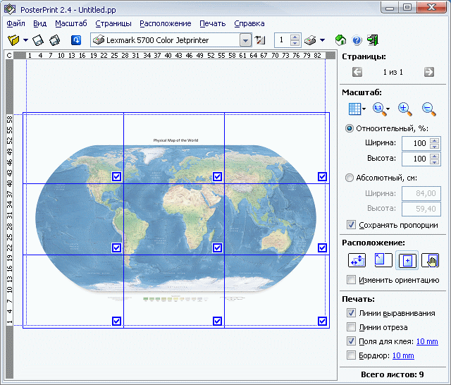

PosterPrint 2.5R - многостраничная печать
Печать многостраничных постеров и баннеров
Вам когда-нибудь требовалось напечатать большой плакат или баннер, но из-за отсутствия крупноформатного принтера приходилось отказываться от затеи или рисовать вручную?
Используя PosterPrint вы легко можете напечатать постер, плакат, таблицу, диграмму и другой крупноформатный документ в масштабе от 25% до 1000%. При этом сам документ создается и печатается непосредственно из любой знакомой вам программы (например, MS Word, Corel Draw, Internet Explorer, и т.д.), так что нет нужды изучать интерфейс и команды редактирования графики.
PosterPrint также может экспортировать документ в метафайлы (*.emf) для использования в других программах.
Для ознакомления с программой скачайте демо версию, или просмотрите flash демонстрацию. PosterPrint works like a dream, is extremely well supported and produces the best large format print quality of anything I have tried. Highly recommended.
Alan Hunt
Director, Sandstone Limited
United Kingdom
Как это работает
С помощью любого Windows приложения создайте или откройте документ и отправьте его на печать на виртуальный принтер PosterPrint. Затем в главном окне PosterPrint выберите требуемый масштаб увеличения и нажмите Печать - PosterPrint напечатает документ в нужном масштабе на нескольких листах бумаги стандартного формата на любом доступном принтере. Склейте листы и постер готов!

PosterPrint автоматически определит оптимальное расположение страниц для минимального расхода бумаги. Кроме того, PosterPrint может убрать пустые листы, вырезать ненужные фрагменты и напечатать поля для склейки.
Читать еще или смотреть еще...
Системные требования
Операционная система: MS Windows ® XP/Vista/7 и выше, 32 и 64 бит.
Требуемое дисковое место: 700K.
Ограничения демоверсии: Печать максимум 2х2 листов.